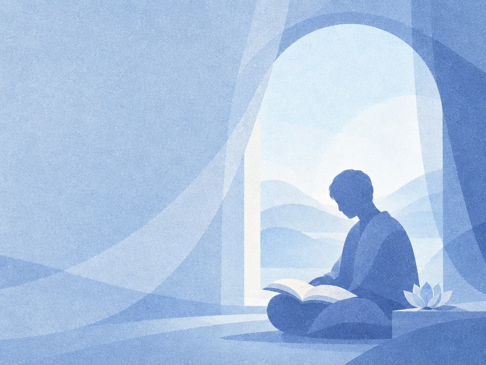
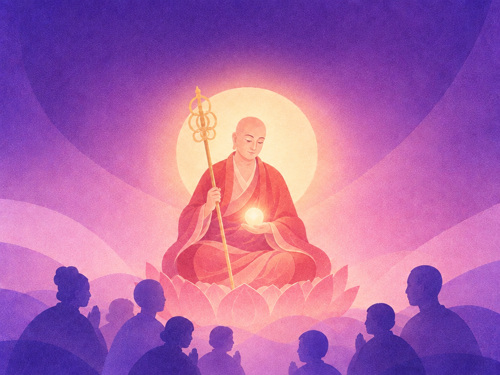
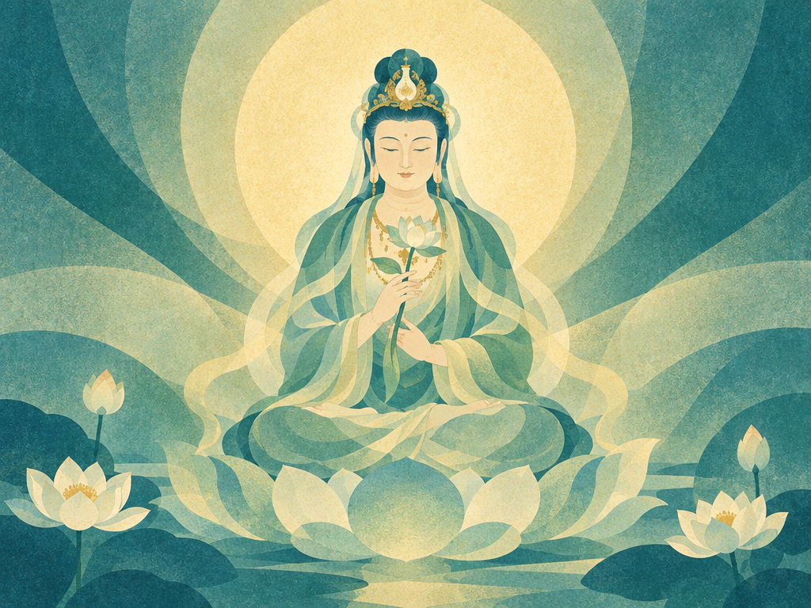

HT. Thích Tịnh Không Giảng Giải
Kinh Đại Thừa Vô Lượng Thọ Trang Nghiêm Thanh Tịnh Bình Đẳng Giác
Bộ kinh cốt tủy đệ nhất Tịnh Độ tông, xiển dương 48 đại nguyện của Đức Phật A Di Đà.
Những lời dạy quý báu của chư Tôn đức, giúp bạn thảnh thơi
an trú trong hiện tại và nuôi dưỡng tâm lành mỗi ngày.
Định hướng con đường tu học phù hợp với trình độ, thời gian và chí nguyện của bạn
Khám phá lộ trình 3 chặng tuần tự: Khởi Tín kiên cố, Phát Nguyện tha thiết và Hành Trì niệm Phật nhất tâm bất loạn.
Hệ thống Boxset các bộ đại kinh Tịnh Độ (Kinh Vô Lượng Thọ, Quán Kinh, Địa Tạng, Niệm Phật Thập Yếu) giảng giải từng tập từ đầu đến cuối.
Khám phá các SeriesGiải mã hơn 100 thắc mắc thực tiễn khi niệm Phật, hóa giải các chướng duyên gia đình, công việc và phút lâm chung.
Xem trang Vấn Đáp“Được vãng sanh hay không toàn do Tín – Nguyện có hay không; Phẩm vị cao hay thấp do Trì Danh sâu hay cạn.” — Ngẫu Ích Đại Sư

Chặng 01 · Khởi TínChánh tín kiên cố như núi Tu Di vào Bản Nguyện Di Đà.
Buông xả duyên trần, phát bồ đề tâm cầu sanh Cực Lạc.
Nhiếp trọn sáu căn, an trú câu hồng danh nối tiếp đời thường.
Các bộ kinh điển Đại Thừa và chuyên luận Tịnh Độ được chư Đại Đức, Tôn Đức giảng giải tuần tự từng tập từ đầu đến cuối. Bố trí dạng bộ (Boxset) giúp quý Phật tử huân tu sâu sắc, nghe xuyên suốt và có hệ thống mà không bị rối mắt.
Bộ kinh cốt tủy đệ nhất Tịnh Độ tông, xiển dương 48 đại nguyện của Đức Phật A Di Đà.

Bộ kinh nền tảng về hiếu đạo, thấu suốt nhân quả và đại nguyện của Đức Địa Tạng.

10 điều trọng yếu thực hành chuyên tu Tịnh Độ từ phát tâm đến giờ phút vãng sanh.
Phương pháp quán tưởng Cực Lạc Tây Phương, Tam Phước và Chín phẩm sen vàng.
Khi tâm mỏi mệt sau giờ huân tu giáo lý, hãy thả lỏng thân tâm, lắng nghe từng giai điệu vi diệu và thầm niệm theo từng nhịp thở để an định tâm thức, tăng trưởng tín tâm.


Âm điệu khoan thai, trang nghiêm từng câu chữ giúp định tâm trọn vẹn.
"Tịnh Độ không ở đâu xa, mà là tâm thanh tịnh ngay trong hiện tại của chúng ta. Khi một niệm niệm Phật khởi lên không xen tạp vọng duyên, sát-na ấy chính là sen vàng nở ngát nơi ao thất bảo."
[00:00] Kính thưa toàn thể quý Phật tử đạo tràng niệm Phật. Hôm nay chúng ta cùng hội ngộ về đây để cùng chiêm nghiệm lại ý nghĩa của hai chữ 'Tịnh Độ'. Người đời thường nghĩ Tịnh Độ là một cõi xa xôi muôn trùng mười muôn ức cõi.
[08:45] Nhưng Kinh Di Đà dạy rằng: 'Tâm tịnh tắc Phật độ tịnh'. Khi tâm chúng ta lắng xuống mọi toan tính hơn thua của thế sự, chuyên chú vào câu danh hiệu Nam Mô A Di Đà Phật, cõi lòng ta bỗng chốc trở nên nhẹ bẫng.
[16:20] Niệm Phật là trở về nguồn cội, là về lại ngôi nhà xưa thanh tịnh vốn có trong tự tánh. Đừng đợi đến khi hơi tàn lực kiệt mới cầu Phật, mà ngay từng bước đi, từng hơi thở hôm nay hãy an trú trong câu niệm Phật.
[27:10] Xin chúc toàn thể đại chúng thân tâm thường an lạc, bồ đề tâm kiên cố, ngày đêm sáu thời đều được chư Phật mười phương gia hộ, tín tâm trọn vẹn.